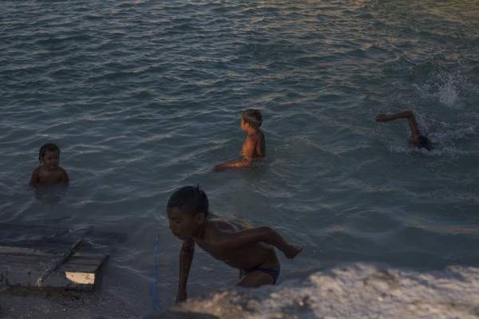
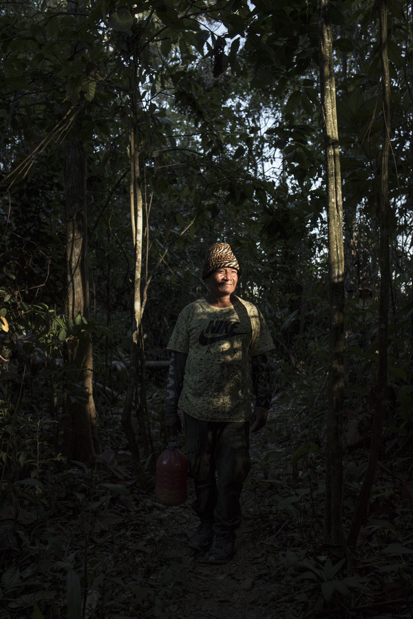
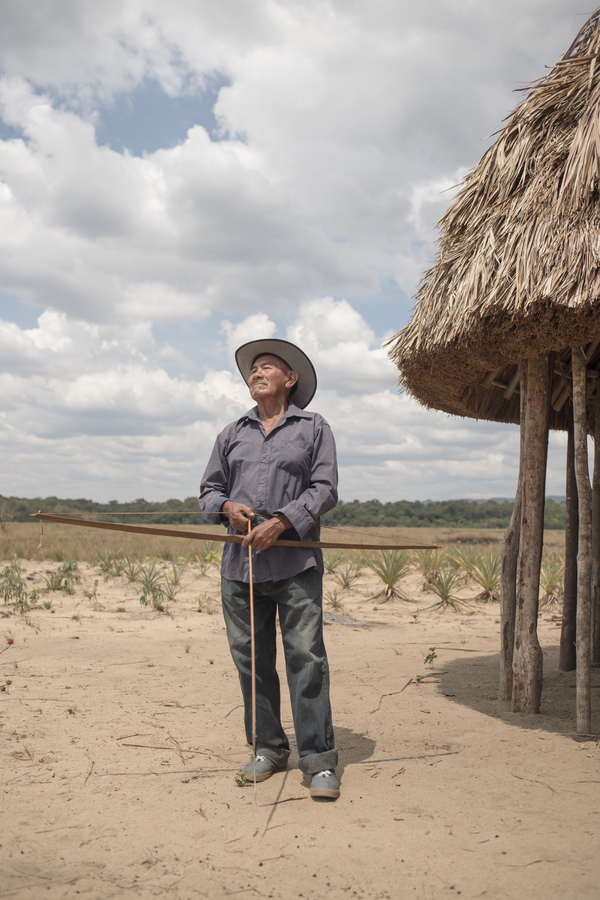

Gold mining devastation
beneath the eyes
of Roraima Tepuy
Officially, Canaima National Park is located outside the Orinoco Mining Arc, yet more than one thousand hectares of its surface are being subjected to gold mining operations. Venezuela’s current humanitarian crisis is compelling the indigenous people of the Gran Sabana to participate in an activity that threatens one of Earth’s most biodiverse corners.
ReadCampo Alegre is the largest mining area in Canaima National Park, located in the Gran Sabana, in the park’s eastern sector, in southeastern Venezuela
THE EPICENTER
―Beautiful! It’s just like being at the beach! How’d they make this water look so blue? ― asks a Pemón youngster, as he and his friends take a dip in one of the settling ponds at the huge Campo Alegre mining complex in the eastern part of Canaima National Park. This is the biggest mining operation in the Gran Sabana, occupying 78 hectares, and is located at the very heart of Venezuela’s Amazon region.
The turquoise-like coloration is produced by the chemosynthesis that results when the bacteria feed on mercury and other heavy metals, as well as other contaminants such as gasoline and oil. The boys dive in headfirst, often gulping some of the water. In the long run, the high concentration of these substances can have negative effects on their growth and development. However, nobody has bothered to warn them.
Campo Alegre is located in spectacular savanna country, surrounded by Earth’s most archaic geological formations, in a remote part of southeastern Venezuela. Maikel Artal, a Gran Sabana tour operator, remembers the water mirror that used to be here, with a row of moriche palms in the middle, and the citrus grove in the background, punctuated by the colorful oranges and tangerines. That’s his last visual recollection from decades ago, when the inhabitants’ only worries seemed to be the meandering Kukenán River during flood stage, when it slithered into their homes like a giant water snake.
Nowadays, the one-hour drive through the eastern part of Canaima National Park, along the stone-paved road that breaks off from the main asphalt-paved highway that leads to Brazil, ends at a village that now has a totally different look. Two kilometers before arriving, you can see an enormous patch of white sand that stands out behind some twenty houses that have been built in the traditional indigenous manner.
A Pemón youngster plunges into a turquoise-colored settling pond at the Campo Alegre mining site in the state of Bolívar.
The mine occupies the indigenous village’s own backyard, and defines the landscape, as seen from the school, the abandoned walk-in clinic, and any one of the village houses. Together with other mining focal centers, the occupied area at Campo Alegre covers 187 hectares. The eastern horizon, visible as a line of prominent flat-top geologic structures known as tepuis, the tallest being Roraima Tepuy, which reaches 2,810 meters (9,219 ft) above sea level, standing out as a sentinel and silent witness to what transpires below, and as the sole reminder that we are on the same territory as before.
A group of children cooling off in the settling ponds at the mining area, a couple of hours after the school day is over
The river’s backwater lagoon, which used to provide fish to feed the village and served as its water source, has been slowly disappearing. There’s no trace left of the moriche wetlands that once served as a moisture storehouse. In its place are enormous excavations, deeper than three meters (9 ft), with remnants of old hoses, as well as turquoise-colored settling ponds. The citrusy colors of the fruits that used to be harvested years ago have long disappeared, and the village is totally silent.
Biologists explain that the color of the water indicates the presence of heavy metals
Rudimentary mining operation. Material extracted from the mine sliding down a wooden sluice.
SOSOrinoco, a non-governmental organization, conducted a technical analysis of satellite imagery provided by Sentinel in 2018, which showed 33 mining areas inside and adjacent to Canaima National Park, where mining is prohibited. Of these areas, 45% were inside the boundaries of CNP, which meant that 501 hectares were being affected. For the present report, we asked this organization for permission to access and use the imagery of originally-identified sites that match those areas where mining activity has been detected during the last two years.
A more detailed analysis, conducted in collaboration with experts in the use of remote sensors, focusing on the eastern sector of the protected area, and validated through field visits during the first quarter of 2020, led to the detection of 21 mining sites that had not been previously identified, consisting of an additional 459 hectares of lost vegetation cover, soil degradation, contamination from mercury and heavy metals, as well as from oil and gasoline.
Most of the illegal mining sites newly identified by this study are located in the park’s eastern part, which is the easiest sector to reach thanks to a 316-kilometer asphalt highway, built three decades ago, and crosses this indigenous territory from north to south. Of the four mining operation areas showing the most activity, three are located in this area of the park, namely Campo Alegre, San José de Guarima and Acaredén.
The western sector of the park, which is supposed to guard and preserve the majestic Auyantepui mountain and Churún-Merú, also known as Kerepakupai-Merú, and better known worldwide as Angel Falls, the tallest in the world, has had 518 hectares of its area subjected to mining activity. Meanwhile, the eastern sector of the park has seen 515 hectares likewise affected, which means that a total of 1,033 hectares of Canaima National Park have been subjected to illegal mining activity as of the first quarter of 2020.
“The newly detected areas suggest that activity has been intensifying in the eastern sector, given that these mines had not been spotted before,” explained Vilisa Morón, president of the Venezuelan Ecological Society (Sociedad Venezolana de Ecología - SVE).
Viewed through satellite imagery, this area shows gigantic holes in the ground and large patches of white sand. Even though this area isn’t officially located in the Orinoco Mining Arc, designated by the Nicolás Maduro regime in 2016, mining activity here continues to grow unabated, and in recent months it has been relying on fuel supplied mainly by individuals wearing military uniforms, and payable in gold: starting at 7 grams of gold for a 200-liter barrel of fuel, equivalent to USD 394.23, based on the price of gold on the world market as of 29 May 2020. “There are three flights a day going from Santa Elena to Icabarú bringing in fuel to the mines, where it is sold and distributed by the military,” states a source living close to the border with Brazil.
There are open-pit mines as well as underground mines. In the eastern sector of CNP, these are concentrated in Sector 5 of the Gran Sabana. Even though they’re located inside indigenous territory, there’s a presence of criollos, as non-indigenous outsiders are called by the local indigenous people. In the alluvium deposits mines, there is a constant use of mercury, which contaminates the soil, and over time its accumulation in the settling ponds percolates down into the water table, thus causing much damage to the ecosystem.
The indigenous people tend to underestimate the effects of the use of chemicals, and are not usually aware that industrialized implementations, such as pressurized water jets, are being used at the mining sites, instead of simply panning for gold nuggets or using picks and shovels.
Unlike the nearby municipal districts of El Callao, Sifontes and Roscio, there is an absence of irregular armed groups in the national park, although there is some harassment by the military. In contrast, closer to the border with Brazil, at the mines near Icabarú, where mining operations began in the 1940’s, when two of the largest-ever Gran Sabana diamonds were found, violence is now leaving its scars, mining activity is accelerating and the impact is undeniable.
According to SOSOrinoco, mining operations have impacted 7,400 hectares in the areas surrounding CNP.
Click here to navigate through the map and the mining focal poin
The vegetation that once characterized Campo Alegre has been pushed aside by the excavated earth.
At the center of Campo Alegre, a mine complex occupying 78 hectares, we see two men, covered with dirt from head to foot, draining out the pool of water at the bottom of an active mine pit. A hydraulic pump starts to do its work as the men aim the nozzle of the fat hose to draw up the muddy water containing bits of gold ore, all of which is then transferred onto a long, inclined sluice that is held up by wooden poles. It is high noon, the workday has yet to end, and close by there is a jug of kachiri, an indigenous beverage prepared by fermenting mashed manioc roots.
Pedro Velásquez, a member of the Pemón community, is a short man with a bright look in his eyes. He first held gold in his hands back in the year 2012. His appreciation of the spectacular Gran Sabana likely resembles that of the Capuchin Friars when they first arrived in 1931 as missionaries in this part of southeastern Venezuela, which was still unexplored at the time. In the words of Father Nicolás de Cármenes in his autobiographical book, Missionero en la Gran Sabana: “Hiding in the distance behind the mist, there are very tall mountains and ridges of highly varied shapes: always beautiful!”
Two members of the Pemón community fishing on the Kukenán River in the Gran Sabana
The Pemón people have always called this land Wükta, which means “mountain region,” yet political nomenclature bestowed upon it relatively recently by the government is Gran Sabana Municipal District, which gives official recognition to the flat open spaces of the savanna rather than to the mountains. The Pemón people, whose language belongs to the greater Cariban family of languages, lived mainly off agriculture, consisting of the itinerant conuco system, whereby a small plot, called a conuco, is cleared by the slash-and-burn method, planted with corn or other crops, and then abandoned after three months, due to soil depletion. The farmers then cleared new plots in nearby areas, especially in floodplains alongside the rivers that meander through their territory.
There are 29,897 Pemón living in the state of Bolívar, mainly in the Gran Sabana, according to the latest census figures from the National Statistics Institute (Instituto Nacional de Estadística), issued in 2011. Meanwhile, the Amazonian Georeferenced Socio-environmental Information Network (RAISG) reports that Venezuela’s Amazon region has the highest concentration of indigenous territories within its nature preserves, when compared with the other eight countries that share this oxygen-replenishing rainforest.
“Since he wasn’t driven by greed for consumer goods, luxuries or superficialities, the Pemón worked to meet his needs and those of his own family, which certainly wasn’t much,” states Antonio de la Torre Arranz in his history about Santa Elena de Uairén’s prosperous era, marked by the arrival of the missionaries in their “civilizing action,” as evidenced in a letter of April 1931 where the Juan Vicente Gómez government responds to the Apostolic Vicar of the Caroní, Diego Alonso Nistal.
“In the Pemón culture, there was no money, but they had agriculture. Then people who knew that gold had a price came in and created that need,” states Domingo Fernández, Second Captain of Kumarakapay.
Pedro Velásquez was Captain of Campo Alegre when the gold mining activities began
That quest is reflected in every excavation at Campo Alegre, where people from different nearby communities have been working. Pedro Velásquez, who had been Community Captain in 2012, can confirm this. “We had decided to set up a fish-farming pond for the students, so we dug a 20 by 20-meter hole and discovered that there was gold, and so we laid down a carpet to trap the gold particles. After that, we dug another one measuring 40 by 40 meters for the children, and the yield was by the kilo,” he recalls.
The first hydraulic pump to arrive at the community belonged to a Brazilian man that knew one of the indigenous women and asked for permission to work there. This is a pattern that often repeats throughout Pemón territory in places where there are gold deposits, and where criollos are involved. They continued to dig into the earth, demolishing houses that stood in the way and cutting down trees. Today, from the deserted esplanade you can see just a few miners at work. “Not much comes out anymore,” he says.
From the beginning, every miner was supposed to contribute a percentage to the Captain. The goal was to cover necessities. With that assessment, they built a small church in the center of the village, purchased a truck, and paid for a tractor that never arrived. Currently, they are paying the schoolteachers. In the short term, they want to find a female physician to activate the walk-in clinic, which is very much needed these days. Since it was built, the structure has stood there gathering dust.
A couple of years ago, faced with all the destruction, the community tried to shut down the mine. The destruction became evident when a dozen cashew trees were planted, but they grew no taller than one meter, and if they had grown to maturity, they would have yielded fruit that was contaminated. “This is a National Park, but right now we don’t really have a National Park (…) The elders used to say ‘don’t work over there, the mine is something bad’ because what’s important is the conuco and the fishing. Let’s stop destroying our land, let’s do some planting, but then the people from Brazil and Caicara arrived and we ended up destroying all of this,” he explains.
A group of men chatting at the Campo Alegre community after returning from the conuco.
Tina Oliveira, Coordinator of the Wataniba Socioenvironmental Monitoring Program, maintains that the Pemón people are being challenged by a series of factors that have generated changes, needs that did not exist before, and an alienation from their own traditions. “The emergence of the Mining Arc project and the increased pressure from resources such as gold, in other words, the same situation that led to the decline in tourism, plus the gasoline shortage, have all pushed many indigenous people into working at the mines due to the absence of other ways to satisfy basic needs,” she said.
Illegal gold production continues to forge ahead in the indigenous territories, with participation by Criollos, who provide the capital investments, as well as by indigenous individuals, who are merely trying to subsist. Most of the yield ends up in the vaults of the Central Bank of Venezuela (BCV), or is smuggled out of the country, as was revealed in a report prepared by Correo del Caroní, in collaboration with Infoamazonía, Runrunes, The Miami Herald and The Correspondent: “Venezuela, The Paradise of Smugglers” (Venezuela, el paraíso de los contrabandistas).
The gold that is extracted from the Gran Sabana area by the indigenous miners is usually sold at Santa Elena de Uairén, the Venezuelan town closest to Brazil.
There are no official figures as to the specific amount that is currently being extracted; however, the World Gold Council (WGC) estimates Venezuela’s gold production to be around 23 tons in 2018, and according to the Mining Sector Plan for 2019-2025, the year-end goal for 2019 was 25.40 tons and 79.40 tons for 2025. Neither the COVID-19 pandemic nor its ensuing quarantines have slowed down the picks and shovels, or the hustle and bustle of the hydraulic pumps, all this despite an economic crisis that grows worse by the day.
In Venezuela’s Amazon region, the fascination with gold has devastated forests and carved enormous craters. It has unleashed wars between gangs and resulted in dozens of deaths and disappearances. The allure of this precious metal would be almost impossible to explain if it weren’t for the setback, and possible demise, of the petroleum industry in a country that has been so addicted to easy revenues from the crude oil exportations. According to statistics provided by the Organization of Petroleum Exporting Countries (OPEC), between 2018 and 2019, Venezuela’s oil production fell by 33%. The collapse has been unstoppable.
The Nicolás Maduro regime is deeply aware of the implications of the mining operations, and so is the Council of Chieftains General. But no institution steps forth to tend to the needs of the Pemón people, a reality that repeats itself in the neighboring states of Delta Amacuro and Amazonas, which together with the state of Bolívar make up Venezuela’s Amazon region. Meanwhile, this neglect is further exacerbated by the regime’s official promotion of mining activity in this area.
The latest action with this purpose in mind was the purported legalization of mining raft operations along the Cuchivero, Caura, Aro, Caroní, Yuruarí and Cuyuní Rivers, which further leads to the environmental degradation of a strategic river basin that provides the necessary water for the operation of the hydroelectric generators at the Guri Dam, which in turn provides more than 70% of the country’s electric power needs. SOSOrinoco estimates that there are now 20 mining rafts on the waterways of Venezuela’s Amazon region. The indigenous inhabitants concur that there are plans to launch more mining rafts into the Kukenán River.
Dorixa Monsalve Dam, a biologist and member of the Platform Against the Mining Arc (Plataforma Contra el Arco Minero), is of the opinion that the dynamics of this extractive activity seem to dominate the region’s socio-economic prospects structurally, and may have a tendency to deepen the impacts on the park, the territory and the Pemón people, “and will probably continue, and become further entrenched as long as the current regime, faced with the economic debacle produced and maintained by its own erroneous and absurd policies, and by the sanctions imposed by the United States, becomes more and more dependent on the extraction of mineral ores from Venezuela’s Guayana region, and on the irregular channels utilized for their commercialization.”
“The mine is going to kill us and leave us without water. The miners don’t see that. They show nothing but greed,” states Regina Colón, an indigenous woman belonging to the Council of Elders at San Ignacio de Yuruaní, a community that for decades had been focusing on tourism, but now has to deal with the expansion of mining activity in nearby territories, which has led to the abandonment of traditional economic activities, the disappearance of bodies of water, entry by outsiders and a disconnect with the environment.
They’re already suffering the consequences. Colón states that the water from the Surukún River is no longer fit for washing the manioc roots after the harvest, that it no longer has any fish, and that the Mapaurí Creek’s water is now murky, and the undulating Mürümpa Brook that used to flow through Manak-Krü, where the women washed clothes and bathed, turned into a trickle and became a mudhole.
At Campo Alegre there is a desire to grow food for local consumption
DEATH
You reach Arenal just about when you think you’re not going to find anything along the way. This road is out of the ordinary, and is abrupt and difficult. While savannas are mainly flat land with tall trees growing where the mountains meet the rivers, this particular road goes through vegetation whose adaptations resemble what is found in the wooded areas of the high mountain passes, yet the temperature is scorching hot.
The trip to the Arenal mine takes more than three hours
Inactive mine on the way to Arenal
Arenal, which means ‘sandy area’ in Spanish, lives up to its name: it is a place covered by immaculately white sand and is located three hours driving distance from Troncal 10, the main highway. In order to get to Arenal, it is necessary to cross dozens of brooks, swampy moriche groves, slippery fords, and damaged bridges that are about to collapse, and you have to deal with a dirt road that is steep and full of rocks. Many miners travel both ways on foot along this exhausting path, which is hard on the feet. Just when you think you’re lost, you’ll see a rectangular pavilion where dozens of hammocks have been strung up. This is just before the Pemón checkpoint. A group of men controls access by raising and lowering an old tree trunk.
You need to identify yourself and state your business. Only the captain can authorize entry, which depends on the mobile telephone call getting through. There’s only one telecommunications provider, and the signal is weak. When the captain gives them his approval, the men write down the names of the outsiders. Ten minutes after entering, you can see small mining camps just a few meters from the ore deposits. In order to obtain authorization to be hired, mine workers must present a certification of residence and good conduct issued by their community. They tell us that alcohol, drugs and weapons are prohibited.
At the mining site, the excavation is still open and the feeling of death still lingers. Standing atop a mound, from which you can see all 15 hectares of the mining site, is a group of about six men, some are Pemón, and others are Criollos. They are in charge of the mine. Needless to say, a security guard was assigned to keep us under surveillance. A couple of women are panning for gold at the bottom of a hole that is lighter in color, and about five meters deep. A couple of hoses are ejecting jets of pressurized water. You can hear the hustle and bustle of the hydraulic pumps located a short distance away. And you can see the inclined sluices where the gold-bearing slurry is being transferred. Later, the partially isolated gold is subjected to an amalgamation process that uses mercury to further isolate the gold.
As you draw near, you are awestruck at the sight of the gaping hole that has been carved out of the dark brown earth below. The enormous hole has a depth of more than 10 meters and its width exceeds 20 meters. Dirt clings to the bodies of the 18 men working below, covering them completely, making them look like ants. They shovel the sand while four hydraulic pumps activate the hoses. You cannot tell their faces apart. They’re totally covered with brown dirt from head to foot. The white of their eyes stands out in deep contrast with what looks like brown uniforms, the result of the dirt that clings to their bodies. They work like machines from 6 am to 5 pm.
Less than three weeks ago, in the predawn hours of 3 February 2020, part of an enormous high wall, some of which still threatens to give way, collapsed onto a group of miners working under the light of the moon, and also using lanterns. Leaders in the area don’t want to talk about it, perhaps trying to put to rest the thought of the deaths of their indigenous brothers.
That day, Yraiza Decelis, the sister of one of the victims, woke up to the news of the accident. Up until that moment, she was unaware that Omar Eugenio Decelis Ayuso had gone to work at the mine. The young man, age 29, had left that Saturday morning on his motorcycle to take some fariña, a flour made from the manioc root, to some relatives at Campo Alegre.
“He was supposed to go and sell it and then return, but they invited him to stay. He hadn’t planned it that way,” she says.
The woman, a petite 35-year-old doctor, arrived at eight in the morning after an arduous journey. It had rained. She was hoping Omar had been merely injured. She was ready to render first aid. A terrible sensation gripped her stomach, but she didn’t stop. Since this wasn’t the first time that she had gone to that mining site, right from the beginning, she couldn’t stop thinking about the utter fright this place instilled in her.
And it was worse. Half an hour earlier, a lifeless Omar had been taken out of the excavation. His body was all covered with brown dirt, resting on a carpet used by the miners in part of their work. There were about 30 people standing around. The other victim was lying on some boards. The injured were being cared for. One of them needed a neck brace and an analgesic. Fear.
―I was hoping it was just an injury. But no. When I saw him, I couldn’t believe my eyes.
A few meters away, the sound of the hydraulic pumps could be heard again. They thought there might be a third body, but after digging here and there they called off the search.
Omar had been a painter and a dancer
Dilia Ayuso, Omar’s mother, at her home in Manak-Krü
It’s noon, 4 March 2020, at the indigenous village of Manak-Krü, which means “mountain shaped like breasts.” It’s been a month since his death, and at his home, his mother remembers that the following day would have been Omar’s 30th birthday. Thin as a rail and good-looking, he was the fourth of six siblings. He studied and graduated from the community’s Faith and Joy School (Escuela Fe y Alegría).
He started to paint and dance at an early age. He polished his techniques and became an active figure on the cultural scene in Santa Elena de Uairén, the now turbulent seat of Gran Sabana municipal district. During Mardi Gras time he assembled and decorated floats. He taught folk dancing. He began to study education in 2015. He went as far as third semester, but was forced to drop out because he lacked sufficient funds. His mother had always asked him to study, to have a profession. That was their goal.
This was the third time Omar had gone to the mine looking for work, to that hole in the ground that crushed him to death in the end.
―He was split apart by the rock. There were four of them, two dead and two injured. His life ended that way, much too short. He was so talented. This has been hard. Both his legs were fractured, and he was hit in the head― says his mother, Adilia Ayuso, her faint voice drowned out by her weeping.
Omar had a seven-year-old daughter
Dozens of acknowledgements, family photographs, diplomas, poems written to Dulce, a long-time love of his, and his paintings are on display on a table in the living room. Omar was one of 13 people to have died so far in 2020, buried by collapsed excavations at illegal mining sites in the state of Bolívar, according to records kept by Correo del Caroní.
―Professionals are having to quit their jobs out of necessity. There are many others like him. He was drawn to the mine out of desperation and concern. A regular job does not cover a family’s basic needs― says Decelis, whose monthly salary, as of a few days ago, was equivalent to the price of one chicken.
“If you work at the mine for just one day, you’ll earn enough to last you a week, 1 gram, half a gram,” says Yosbelys Rodríguez, a 30-year-old woman, who shows us some fine gold she has extracted at Arenal this morning, to which she plans to add more to then mix in with the mercury. At this rate, Rodríguez could accumulate 14 grams, equivalent to USD 788.46, by working non-stop for one month, yet this is in a country where the minimum wage is only USD 2.20 per month.
Atop the knoll at Arenal, William Caraballo, one of the team leaders at the mine, says that the most important thing for them is work, “you work in order to survive.” Those who come to Arenal live there for a few weeks until they’ve earned enough to justify going back, “10 grams, 7, 6, 5, 15, little by little.”
TOURISM
Mario Rodríguez normally works as a guide and as a porter at Roraima Tepuy, a flat-top mountain shared by Venezuela’s State of Bolívar, Brazil’s State of Roraima, and the Essequibo Territory, which is claimed by Venezuela, but occupied by Guyana. He is 39 years old and has three children. In April of 2019, he and his entire family moved to the El Esqueleto mine, an underground mine that occupies as many as 12 hectares in the eastern sector of Canaima National Park. For Mario, who is accustomed to hiking up Roraima Tepuy at least six days a week, the six-hour trek to the mine seemed like nothing.
In January of 2019, as many as 252 tourists ascended Roraima Tepuy, of which 141 were Venezuelans, and 111 were from other countries, mostly from Brazil, according to statistics compiled at the office of the National Institute of Parks (INPRQUES), located at the foot of the tepuy. In March, one month after the massacre at Kumarakapay and the Maduro regime’s closing of the border with Brazil as a way to frustrate the attempt to bring in humanitarian aid, only 43 people hiked up the mountain. The decline continued. In July, halfway through the year, only 27 people climbed to the summit of Roraima Tepuy.
Gran Sabana sunset in late February
Tourist visits to Roraima Tepui came to a halt in 2019 following the closing of the border and the military attack at Kumarakapay
For this community, whose only source of income had been tourism, the consequences were immediate. Food supplies were running out and there was no way to find income sources in one of the most remote areas, well away from Troncal 10, the main highway. The conuco was no longer sufficient. Guides and porters decided to dig for gold in the galleries of the underground mine.
Mario says that he had left in order to provide for his children by earning enough money to buy food for the household. Venturing out to burrow underground went against his grain. He soon learned how to cut into the rock to pull out “that little bit of gold,” but he admits it was difficult. Going into a deep tunnel where there is less air to breathe the deeper you go. Having to cut into the tunnel walls using pick and shovel. “The truth is I’m no miner,” he insists. But time transpired, exactly five months.
El Esqueleto mine is located at the headwaters of the Mapaurí River, which flows by the community that watches over “Grandmother Kueka,” the stone that is sacred to the Pemón people, and which was recently returned to the Pemon people after being in Germany for two decades. Mario mentions that they’re not allowed to use mercury or other chemicals near here. People in the community confirm this, but they report that the water is not as crystalline as it once was. It flows in looking black, all stirred up, reports Bibiana Benavides, the Captain of Mapaurí.
While at the mine, Mario stayed in contact with the tour operators. Just about five months to the day after he had left, he was notified that a group of tourists was headed toward Roraima Tepuy. Mario then came home, never to return to the mine again. “For me, the mine is not feasible. It’s not a good job. Those of us here aren’t miners; working with tourists is our only job.”
Starting in December of 2019, the influx of tourists improved. “Little by little,” says former Captain Florencio Ayuso, drinking coffee as he prepares to set up the electoral tables for the election of a new captain. In accordance with Pemón custom, Ayuso is at the top of the list, and then come the candidates, the new relief staff.

Elena Fernández’s inn at Kumarakapay has seen no tourists in months
Located quite a distance away from Santa Elena de Uairén, is Paraitepuy, a village whose 550 inhabitants have seen a decrease in tourist activity, and many have found it necessary to go work at the mines. The last time the healthcare unit received any medications from the government was in 2019. For now, medical supplies are replenished only by the tour operators, whenever they make a visit.
“We don’t have a car, which means we can’t drive down there to get medications. That’s why we can’t get any. Who’s going to bring it way up here? And why should we go down there if we don’t have any money?” says María Editha Javier, a 46-year-old nurse that was born in Paraitepuy.
María Editha shows the letters, from April of 2019, which they’ve been trying to deliver to Justo Noguera, the Governor of the State of Bolívar. There is a slew of petitions on two sheets of paper, which have gone unanswered after two months. The more frequent illnesses are diarrhea and influenza. The children need vitamins. “All of them are very skinny. I would say, malnourished,” she punctuates. They eat cassava and drink kachiri. And, for now, the healthcare module doesn't even have antivenom serum for snakebites.
The generator that provides the entire community with electricity has been out of order since mid 2018. This forces the children to go to bed early. The darkness makes it so. That’s why María Editha jealously guards the walk-in clinic’s solar panels. “If they quit, we’ve got no lights,” she explains. Also, there has been no internet since early 2019. They don’t know why.
“When tourist activity came to a halt, people left to go work at the mines, to El Oso or El Esqueleto, but I haven’t gone there. Also, down here there was some mining activity, but without using any machinery, just people panning for gold. We’re not meant to be mine workers,” he repeats.
Meanwhile, on the air route to Canaima, it’s impossible to keep the tourists from seeing the enormous settling ponds, which have taken on a blue-green tinge as a result of the use of mercury, as well as the dozens of mining rafts along the Carrao River, in the middle of a forest that resembles broccoli from the air, as confirmed in the Runrunes report. Also, along the land route to Roraima Tepuy, you can clearly see the scars upon the land.
On the road to Paraitepuy de Roraima, indigenous people trying to find gold in a small stream
Along the stone-paved road, an extreme adventure in and of itself, we notice some rocks in disarray on the left edge of the road, which tells us that something’s not right. We have to go on foot for quite a few meters. When we get there, the displaced rocks in what appeared to be a running stream and the small wooden troughs lead us to discover the excavations and the small pools used for rinsing the ore, as well as dozens of quartz pebbles. The tour operators we consulted consider this to be “an aberration.” The area covers two hectares, according to the satellite imagery.
“What shall we do now and how will we survive? This was a discussion we had along the way. But, since this was an emergency, we figured that when tourist activity returns to normal we can count on the community’s commitment to plant trees in order to reclaim the area,” says Carlos Castro, a member of the Captaincy of Paraitepuy de Roraima, who maintains that the pittance they were able to extract proved that mining was not their line of work. “That was not our custom,” he said.
“On a daily basis, we would find enough gold to buy a kilo of rice. That’s a lot of work just for a kilo of rice,” interrupts a member of the Pemón community. “You’d think we were still in kindergarten,” laughed the nurse from the walk-in clinic. The rocks and white sand still remain upturned, but nobody looks for ore deposits beneath all that vegetal residue anymore.
Even though the regime uses more and more propaganda with regard to its actions in the Gran Sabana, none of it has reached Paraitepuy de Roraima. In January, the former captain of the community was saying that none of the government projects had benefitted his community as of then. “We see these projects only along the Troncal 10 main highway,” he said. “But there is a need in communities that are further away,” he added.
He explained that in communities that can be reached only by air, mining is the only way to cover necessities. “They’re able to meet their needs through mining activities and have managed to build walk-in clinics, but at other communities, such as Icabarú, the mining operations are having negative consequences. We no longer have anywhere to plant crops or to benefit from nature’s bounties. We’ve been destroying everything, and now we have to sit down and draw up a grandiose project at the tourism level,” he said.
“I work at a mine. It´s not a gold mine or a diamond mine. My mine has to do with tourism. (...) If we set out to destroy everything by extracting gold and diamonds, then what does that leave for the grandchildren of these people you see running around here?” he asks.
Carlos is also thinking about the youngsters. He wants to revive the original culture by promoting crafts and basket weaving, which is another way of safeguarding the territory. He notes that grandparents are not sufficiently involved in the dynamics of schooling. Some of the wisdom of the past is in danger of extinction.
― What defines this community’s culture?
― The love of nature. Protecting nature. Everything we learn is found in nature.
Meanwhile, in some communities there are clashes that reflect this dilemma of sorts, which becomes apparent as the lust for gold increases, and nature is being destroyed. Thus, gold continues to cast its spell.
A letter of April of 2020 from the Council of Chieftains General of the Pemón People confirms that it has received from the government-owned Venezuelan Mining Corporation (Corporación Venezolana de Minería - CVM) a fee payment schedule applicable to six categories. This is yet another attempt to legalize mining operations in Canaima National Park, and falls in line with the attempt to legalize mining rafts on six rivers in Venezuela’s Amazon region.
The fee schedule establishes the price of fuel at six grams of gold. A fee of two grams of gold is assessed every time a fuel shipment is loaded onto an aircraft. The fee for the transfer mining tools made of steel is three grams for every 100 kilos. The fee for aircraft landing and taking off is one gram. Furthermore, there are two fees for every food shipment, plus a per-person departure fee. The organization disagrees with all of this. “Currently, the indigenous users have not been able to ship any food because of the high costs that have resulted from these fees being imposed by the CVM, which therefore attempt against the food supply security of our communities,” the letter states in reference to this heavy financial burden that seriously affects the aviation-dependent communities.
The organization explains that only 30% of the inhabitants in the aviation-dependent indigenous areas are mine workers and that only 36 of the 118 villages practice mining. “We stand in expectation of your greater understanding and solidarity with our indigenous peoples, who are not refusing to contribute to the country’s economic recovery, but are simply adhering to their rights as human beings, and as subjects of the law,” states the letter signed by Chieftain General Jean Carlos Velásquez.
SOILS AND WATERS
The “contribution” to the country’s economy and the presence of mining activity in such a fragile area, declared a World Heritage Site by UNESCO in 1994, have proved to be disastrous.
In the 2020 World Heritage Watch report, published on June 5, 2020, World Environment Day, SOS Orinoco, a non-governmental organization, petitioned to have Canaima National Park reclassified as being in “critical danger” and included on the List of World Heritage in Danger, “as a political action that would encourage the authorities to act in a decisive and assertive manner, conducive to the cessation of mining operations within the boundaries of the park.”
In April of 2020, Juan Guaidó, President of Venezuela’s National Assembly, stated in a letter to UNESCO that the present conditions at Canaima National Park meet all the criteria for being included in the List of World Heritage in Danger, given the exacerbated devastation and the lack of political will power by the government of Nicolás Maduro to put an end to the mining operations.
Venezuela is a megadiverse country. In Latin America, it ranks sixth in diversity of species, and is tenth in the world, according to the International Union for Conservation of Nature (IUCN). In Venezuela’s Guayana region, there are 2,136 endemic plant species that are found nowhere else on Earth, which gives this region great environmental and ecological relevance, according to inventories compiled by Venezuela’s now defunct Ministry of the Environment.
In order to extract anywhere between 8 and 10 grams of gold in the vicinity of Santa Elena de Uairén, located in Sabana Grande municipal district, it is necessary to excavate one ton of earth. At Campo Alegre, signs of poverty and the destruction of the vegetation layer are clearly visible from any vantage point. The enormous patch of white sand is clearly visible, even from the international highway, but what tourist, enthralled by sight of the majestic tepuy formations and the wide-open skies, would ever think that this has anything to do with a mining operation.
Mining activity in areas in the vicinity of the park, the extraction of stones for use in construction, tourist activity, uncontrolled fires and agricultural activity were considered to be “high threats” by the 2007 UNESCO report, which did not mention any mining activity inside CNP at that time.
At Arenal, from atop a rocky mound amidst the lowland forest you can see that “these plant varieties have been pushed aside by the earth-moving equipment and there is little likelihood that these plant species will ever recolonize in areas surrounding the mine, where we see dispersed piles of sand, scars created by vehicular traffic, campsites, and other evidence of mining activity,” explains Vilisa Morón, President of the Ecology Society of Venezuela (Sociedad Venezolana de Ecología).
It’s very unlikely that the propagation processes that ensure recolonization will materialize, as the adaptability of the plant species that have been removed is highly specialized and limited. The mine operations exploit the easily accessible water table, which is being depleted by the hydraulic pumps, she explains, and wherever gold is extracted nothing is left of the layer that enables these plant species to take root.
“At the Arenal mine, this translates into 15 hectares that are totally devoid of vegetation, without any likelihood of restauration, and these forests, even those located a short distance away from the mines, are not normally subjected to use pressures, but this illicit activity is degrading them,” she emphasizes.
The progressive degradation of this natural space, unique in the world, is well reflected in the words of Juan Carlos Sánchez Martínez, co-winner of the Nobel Peace Prize in 2007, and a member of the United Nations Intergovernmental Panel on Climate Change (IPCC): “All the lands that have been designated for mining, particularly surface mining, will become terrain where the forests have been sacrificed, as this requires the removal of large amounts of earth. This sacrifice of forests represents an irreparable loss of natural capital.”
The large number of endemic species in areas such as Venezuela’s Guayana region leads degradation activities such as mining to generate the loss of unique species. The possible consequences of any impact may mean forests that show a diminishment in their wealth of species.
“This is why all the mining operations we see along the banks of the Yuruaní, Aponwao and Kukenán Rivers are causing irreparable damage to the nation’s biological resources. These forests are among the most vulnerable to the effects of use pressure, as they grow on rich soil, where the Pemón have also cut clearings for conucos and established villages, thereby facilitating degradation processes that lead to the devolution of the forests into savannas,” states the president of the Venezuelan Ecology Society.
In the heart of the savanna, we see another patch of white sand, another blue-tinged settling pond and wooden troughs reveal an inactive mine just a few meters from a moriche grove, an oasis-like image typical of the Gran Sabana landscape, at whose edge you can see the brownish waters that lend evidence of mining activity. “Illegal mining operations are sprouting up around the moriche wetlands, as evidenced by the mines in the area of El Mosquito and Campo Alegre, where you can see the remnants of what used to be the moriche groves that once grew on small islands amidst the wetlands that now serve as a catch basin for the contaminated fluids, originating in the mining operations that are proliferating throughout the hills and dales,” explains Morón.
Mining activity threatens the morichal wetlands
This wetlands ecosystem is of great importance for safeguarding and feeding the birds and mammals, in addition to providing environmental benefits of vital importance to the human communities by controlling the flow of waterways, filtering out contaminants and providing the fruit and fiber provided by the moriche palm.
Mining operations affect the moriche wetlands in several ways: (a) the elimination of these ecosystems in order to extract gold, since they lie atop ore deposits, or to gain access to underground water for feeding the hydraulic pumps; (b) sedimentation or contamination by percolation, debris and refuse floating away from active and abandoned mines during flood stages, changes in flood dynamics, and an alteration of conditions that lead to flooding.
Along these meandering wetlands, the Pemon find it easier to hunt for game such as deer. In this respect, all the animals that need to drink this water, as well as the fish that live in it, and the fruit of the trees that need this water are being exposed to heavy metal contamination and will be prone to degenerative diseases in the future, explains Morón.
The soils of the Gran Sabana are highly fragile, which accentuates their low recovery rate
Likewise, the forests of the Gran Sabana are being subjected to hydric stress, as well as to acidified soils that provide scant nutrition, and these are factors that make the regeneration processes slower than in other tropical forests. “Therefore, small or mid-scale mechanized mining operations present an imminent threat of destruction for the vegetation cover in the area where the such activity takes place,” she adds. This activity further intensifies the chemical stress on these ecosystems as they become contaminated with heavy metals.
More than 90% of Canaima National Park’s drainage area belongs to the Caroní River’s sub-basin, which provides water for generating 70% of the hydroelectric power consumed in Venezuela. Tributaries flowing into the Caroní River are the Akaruai, Aponwao, Yuruaní, Kukenán, Surukún, Waiparú, Tirká, Karrao and Urimán rivers.
The rivers of the eastern sector of CNP are being affected in various ways, depending on the location and the extraction method being used: (1) mining rafts along the Kukenán River; (2) mining activity along the banks of the Caroní, Mayen, Aponwao and Akaruai rivers; (3) as well as by the drainage and percolation patterns from the mining sites in and among the hills and vales of the Mosquito, Macriyen, Caroní, Marcan, Canayetua and Uairén river basins, among others.
The main threat to the Caroní River is the sedimentation that results from the mining operations, which can have negative effects on the generation of hydroelectric power. “An understanding of the effects of each of these different mining methods is fundamental for ensuring the conservation of the basins and the protection of the headwaters and associated terrestrial ecosystems,” says Morón.
As for aquatic biota, she explains, the main characteristic of the fish present is that 45% of the species are found only in these bodies of water, thus confirming the importance of conserving them. Furthermore, it’s one of the reliable sources of protein for the Pemón people, even though the potential for commercialized fishing is low.
Atilano Azuaje, who has been working with the indigenous communities for decades, is of the opinion that the damage can be reversed. He points out that nature’s resilience is impressive. “There are many methods that we still do not know at the level of traditional agroforestry systems. Indigenous black soil, the system for making charcoal is a way of reclaiming a territory in an immediate way, because all you have to do is dig a hole in the ground, burn some organic material, get some trees and you end up creating super fertile barriers that will then produce food for the indigenous peoples,” he explains.
Tina Oliveira, Director of Wataniba, agrees. “Is it reversible? Yes, but for this to be reversible there has to be a process of change, whereby there is some kind of return to traditional knowledge and thus identify how, through this knowledge, we can find socio-productive activities that are environmentally in harmony with the ecological characteristics of that area.”
Nevertheless, as long as the factors that feed the greed for gold continues, the degradation will spread, thus generating pressure on this environment and the indigenous communities that live there. “If the government does not seek ways to implement sources of employment, then mining activity will go on, as we continue to destroy the Gran Sabana, or what’s left of the Gran Sabana,” says Eulices Mata, an indigenous man, age 45, who has been at Arenal for a week, after giving up his vending spot at the Santa Elena de Uairén market selling plastic goods.
THE CONUCO
Whenever a miner digs a hole in the ground looking for gold, the uruturú feel offended. These spirits, shaped like giant pumas, emerge from the waters of the Kukenán River in search of prey. They make the sky turn dark, and the only way to fend them off is using a magic formula known as a taren. However, Javier González, an elderly man, age 75, chooses not to annoy these spirits. He describes himself as being “old, old, much too old” and prefers to plant crops, set up a fenced-in chicken coop, and rest in the cool comfort of his palm-thatched hut, located in a flat area of the Gran Sabana.
“Our ancestors knew nothing about gold or diamonds, but then the Criollos came in with their sifters and gold-mining pans, worked and taught the Pemón how to find gold. Now there are much too many miners coming in,” he tells us. For him, mining is not an option. “Mining activity is harmful. Sometimes it’s because of the alcohol they drink, or the quicksilver they use,” he says. Even though the elders are opposed to the mining activity, gold has seduced the younger folks.
Javier González, a member of the Pemón community, at his conuco the Gran Sabana
He is growing pineapple plants on land he has cleared, and has already saved some black beans and rice to be used as seed. He tells us he needs five rolls of chicken wire and some corrugated metal roofing sheets for the chicken coop. He has already put up the frame, using circular beams carved from tree trunks. He says he’s almost there, as he sips more kachiri, a traditional indigenous beverage made by fermenting mashed manioc roots. It is rich in potassium and drink as if it were water.
His daughter, María Alejandra González, a woman with a friendly, happy face, big eyes and skin that’s been tanned by the sun, is chopping up a chicken that her guests have brought to her. Her conuco is a few meters along a dusty dirt path. In the background we hear a concert being sung by chickens, birds and cicadas, which stops as if to join in our conversation. A rooster crows, making his presence known. Right now, there isn’t a single mosquito. Across from the cooking fire, out attention is drawn by the alluring blooms of a mallow plant.
María Alejandra González, a Pemón woman, works in the field every day
Alejandra, her long black hair reaching halfway down her back, finds two cauldrons that she spreads out over the wooden stove, from which an invisible intense heat emanates. She tosses in two sweet peppers and some salt onto the chicken as it cooks in the boiling water. She does some magic. A short time later, on a large wooden table, she serves the tumá, a traditional Pemón broth with a unique flavor that has a slight sting to it. She cries out, “Tumá, tumá!” summoning everyone to the table.
Like her father, Alejandra has kept seeds ready for when the ground is ready. This month is not fit for planting, due to the sun’s intensity, but even that does not force them to go work at the mine. “I think the mining operation outruns the conuco… however, if the gold runs out, then we’ll have nothing. If the conuco isn’t there, what will we do?” she says. For now, the collective work effort, known as the mayú, brings them together to share the abundance.
At the conuco there are no neighbors nearby. You can shout at the top of your lungs and nobody will hear you, except maybe one of Alejandra’s seven children or someone fishing alongside the Kukenán River where it makes a bend. This meandering water serpent furthermore serves as the main boundary between Alejandra’s conuco and the “mainland.” Close by, there’s an inactive gold-mining raft on the river.
Alejandra’s husband Enrique, with water up to his chest, pulls on a rope he uses to get to the other side of the river. Less experienced people prefer to use large dugout canoes, known as curiaras, to cross over to the steep, white sand bank that serves as a natural ramp. Upon reaching the other side, you are greeted by the sight of the casabera, an open-air pavilion where cassava is prepared. There you will see the sebucanes, long vertical tubes woven out of fiber, used for squeezing out the poisonous juice of the manioc root, which turns to cyanide if ingested, as well as the budares, large circular grills made of clay or cast iron, used to cook the likewise large, flat circular cassava cakes.
“Up there, there are indigenous, as well as non-indigenous people, and they’re finding something. Now that the crisis is so serious, indigenous and non-indigenous individuals are working hard, and that’s how they survive (…) The old folks don’t like the mine, but the young ones want to be at the mine,” she explains.

An inactive mining raft on the Kukenán River, a tributary of the Caroní River
―If you had a choice between the conuco and the mine, which would you prefer?
―For me, it’s the conuco and tourism, since working at the mine is very hard for me, sometimes it doesn’t pay enough. Farming may be improving, I would say, that’s what I think.
―What would you need to make farming improve?
―Resources. I want to till the land and raise cattle.
Atilano Azuaje, a former worker at the now-defunct government-owned EDELCA electric power company, explains that in the Pemón conucos you can find as many as 100 varieties of roots and yams whose leaves contain 25% protein, an important nutrient that may contribute to alleviate the country’s current food crisis. These leaves can be dried and ground up to make amicho, a highly nutritious food.
“There’s a lot of knowledge that can be used for reclamation and for the creation of a development model. We’re in the early stages of the UN Decade of Family Farming (2019-2028). Indigenous family farming has better yields and works using fewer resources, and is totally organic. Indigenous people are returning to the conucos, which demonstrates social resilience. Much knowledge has been lost, or will be lost, but there’s a lot to be gained along the way,” he maintains.
A couple of hours away by road, Nelson Salinas Ayuso, a young man, age 34, tosses bread crumbs to some tiny fish swimming amidst other slightly larger fish in one of six ponds that are part of an old fish farming project, begun in the year 2001 at San Ignacio de Yuruaní, one of the communities alongside the main international highway to Brazil. The enormous fish ponds seem to reflect scenes of children at play pretending to grow fish in water buckets.
The family initiative that began under the auspices of Proyecto Mayú of the now defunct EDELCA electric power company is named after Arasari the river mermaid. The enormous natural ponds hold more than five thousand fish from among local species: cachamas1 and cachamotos2. Now the fish population has dwindled. However, even though these fish-farming operations have suffered setbacks from lack of funding and other resources, they still stand as an example of how family farming initiatives can serve as an alternative to dependence on the extractive industries.
His father, Nelson Salinas Jaimes, who was originally from San Cristóbal, in the State of Táchira, and had fallen in love with a Pemón woman, remembers that the first 500 juvenile fish they put in the receiving pond, died almost immediately. He admits they didn’t know what they were doing. They had placed a plastic liner along the bottom of the pond to keep the water from leaking through. “We realized we had made a bad mistake. Later, we didn’t use the plastic liner, began to fertilize it well and it worked much better for us. Some were still dying, but that was because of the cold temperature.”
The time frame required by Fondo Guayana for repayment of the loan was too short. The fish farmers would stock the ponds in January, but were required to harvest the fish within two months. This rush was no help. They had obtained these loans for the purpose of covering prior debts, which contributed to the demise of the project. No agency ever visited them to verify the causes of the negative outcome. Even though there had been an initial assessment, a differentiated follow-up was lacking. All that’s left are some aging sardines, some fresh-water tilapia, and two coporos3.
Salinas believes the project has a future. Their roots in the natural surroundings leads them to seek sustainable alternatives. “We have the ponds, the water and the space. All that’s needed is the funding, the money.”
―What would happen if there was economic assistance for rescuing these projects in the communities?
―Many people would stop going to the mine and stay home taking care of the little fish. These may be long-term projects, but they are productive nevertheless.
The project, which was combining the production of plant and animal food and soil enrichment, proved to be profitable and of benefit to the community, states Rosaida Montilla, a former engineer at CORPOELEC, the government-owned electric power monopoly. She has been working with the indigenous people for decades.
PAPER PARKS
In addition to its neglect of the indigenous communities, the National Executive has shown no interest in preventing mining activity. In 2011, when a group of officials from the National Institute of Parks (INPARQUES) alerted Alejandro Hitcher, who was then Minister of the Environment, to the presence of mining activity in the eastern sector of CNP, and submitted a report to him giving the geographical coordinates, Mr. Hitcher’s response was eloquent.
His answer to an official, who had been working for more than two decades as a park ranger: “If you see a mine to your right, look to your left.”
Canaima National Park was created in June of 1962. Its original surface area was one million hectares, and included the western sector, which is where Auyán Tepuy and Angel Falls are located. In October of 1975, Decree 1.137 expanded the park’s area, owing to the strategic importance of the Gran Sabana to the Caroní River’s basin. This expansion meant that the total area now covered 2.7 million hectares.
INPARQUES headquarters at San Ignacio de Yuruaní in the Gran Sabana
Management of the park is governed by the Organic Law on Land Planning (Ley Orgánica de Ordenación del Territorio) (1985), but only the eastern part has been assigned a Land Use and Regulation Plan (Plan de Ordenamiento y Reglamento de Uso - PORU) for managing that section of the park. The three specific objectives of this law and its regulatory language are: (1) to preserve the quality of the Gran Sabana’s landscape and the exceptional scenic values that characterize it; (2) to maintain the stability of the watershed by protecting the waterways that drain these basins; and (3) to safeguard the cultural values of the Pemón people, the areas where they have settled and their environmentally determined traditions.
But there is nobody there to oversee compliance with these precepts. Across from the IMPARQUES office, at San Ignacio de Yuruaní, there are three Kawasaki 4x4 all-terrain vehicles, engulfed by the weeds that have taken over during the last three years. These paralyzed units, whose tires have gone flat, or have been removed to be used as replacements elsewhere, are a reflection of a paralyzed institution that has at most six workers, who are responsible for the care of an entire park that covers almost 3 million hectares.
“People are now coming here and they’re destroying the Gran Sabana, and where there are mines there is also prostitution, drugs and alcohol,” laments a Pemón tourist guide at Kumararakapay.
Carlos Olegario Reyes, a park ranger at Paraitepuy, works hard together with two other park employees, regulating the flow of tourists wanting to ascend Roraima Tepuy. They have no vehicles or even batteries for their communications equipment; the solar panel at their office is damaged and he says that whenever it rains, and the tourists see everything getting flooded, he feels embarrassed. “Since I’m a native from this area, I feel I have to fight for the park more than anything, and also for my children, so that my future grandchildren will likewise be able to enjoy what we have up there,” he says without showing any regrets.
Venezuela has had nature preserves for 93 years, starting with the creation of the Macarao National Forest in 1926. Decades ago, there was political will and sensitivity regarding the environment, and the State had the technical and administrative ability necessary for addressing the need to establish protected areas in the country. Jorge Naveda, retired from IMPARQUES, and now a professor at the Andrés Bello Catholic University and the Central University of Venezuela, explained, at the Twelfth Venezuelan Ecology Congress (XII Congreso Venezolano de Ecología), how 2004 marked the start of an ongoing internal disarray in the management of the national parks.
An analysis from 2010 shows that 75.78% of that year’s budget was allocated to the northcentral part of the country, near Caracas, while 23.97% went to special actions, with barely 0.25% going to other regions of the country. “This demonstrates that the institution has an extremely centralized budget,” he affirmed. The figures indicate that, while developed countries spend around USD 1,687.00 per square kilometer, Venezuela’s expenditure is only USD 1.62 per square kilometer.
Naveda further explained that the budget for INPARQUES meets only 4 to 6 percent of what is really needed. The deficit manifests itself as deforestation, mining activity, solid waste, invasion by squatters, uncontrolled forest fires and abandoned forest ranger posts. “It’s chilling to see the final result, and that we’re the very threshold of a massive loss of biodiversity and ecosystems that are truly important for the country after so many years of efforts toward conservation.”
Biologist Aníbal Invenon, a former worker at INPARQUES, is of the opinion that the greatest challenge “is not limited to administering a plot of land, but rather an entire territory where people live.” “Today’s priority is finding something to eat, and far from being on the decline, the conflict will continue to intensify, and even more so when a promising recourse, which is nothing more than an illusion, does nothing but unleash a fever, which means intervention, followed by more intervention, until the fever comes down, but the fever is not going to come down.”
“The alternative becomes finding a system that would cover both interests, and this does not mean legalizing the mining operations, but rather finding income alternatives for the families that live there.”
This is worrisome for Darcy Sánchez, the Captain of Manak-Krü: “That’s the first thing children see, and that’s what we would like to stop once and for all, but how do I stop something, when I, as captain, cannot give them another choice because I don’t have that choice?”
The extractive activity on the ancestral lands of the Gran Sabana is reducing the expectations of a dignified life for people living close to the conflict and denies future generations the enjoyment and well-being that this incredible biodiversity provides. Despite the heavy pressures resulting from the quest for subsistence, one still hears a voice coming from the forests and savannas of Canaima National Park begging to be saved from oblivion.